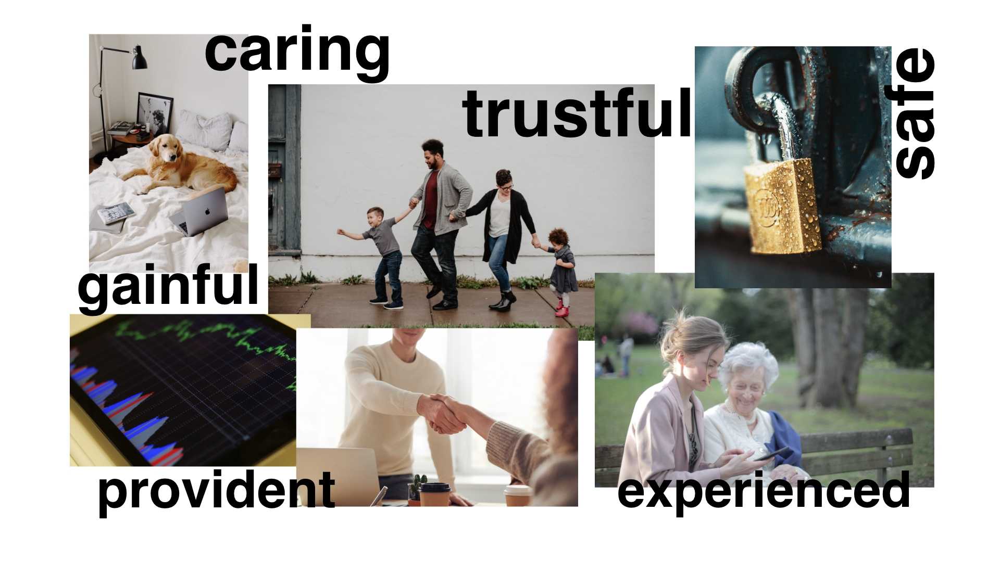
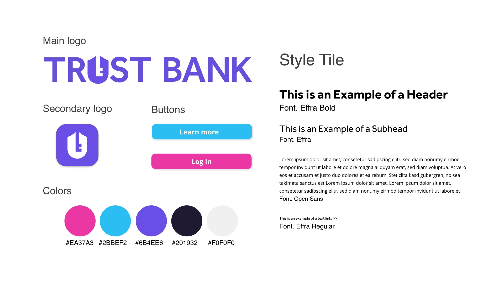

Banking made easy
A CASESTUDY
With a legacy dating back to the early 1900s, Trust Bank has built a reputation for excellent customer service, no-nonsense financial advising, and a technology leader that provides customers with the tools they need to manage all of their finances. They have a presence in every country in the world, where they provide services to individuals, small businesses, and many of the largest corporations in the world. The company holds licenses in each country to offer financial services nationwide.
Customer goal
Trust Bank was looking for a new UI that underscores the company’s legacy and commitment to serving customers with tools, services, and advice that benefit them financially.
My responsibilities
Competitive analysis
Sitemap
Visual UI
Users
With millennials and gen Z as the biggest population groups in the future, Trust Bank's new UI needed to engage these younger consumers. After my user research, a persona was created to help understand these users' needs, behaviors, experiences, and goals.

Branding
Moodboard
Based on the company personality (loyal, trustworthy, experienced, caring, provident, and safe), I created a mood board below, which helped capture and clarify the company's essence.
Sketches
Then I brainstormed some ideas for the new Trust Bank logo; below are my sketches. I wanted the mark to reflect the concepts of trustworthiness and safety. These logo sketches were inspired by a checkmark icon, a shield, and a lock.

Logo and Style guide
The shield and keyhole image inspired the logo, which is remembered for security and safety. The combination of the shield and the key image is essential to accentuate the personality of Trust Bank and align with the company's goal.
While purple and blue colors are perceived as loyal, ambitious, authentic, and kind; pink also is considered as love and kindness. Together, this color harmony speaks out loud the company's message.
Because the new target users of Trust Bank are millennials, they mainly access information on mobile devices. To increase the design's readability on multiple devices, especially mobile devices, I chose the Open Sans font for the body copy because its tall x-height will display the character more clearly.
Interface design
The earlier version of the Trust Bank UI was overloaded with information, leaving many customers overwhelmed. Therefore, the new UI design was determined as a more straightforward layout and fewer features on display to maintain the clean visual look of the website. There would be only essential services appearing on the homepage. And the other features could be obtainable on the sub-menus for better navigating users' daily tasks.

In order to effectively guide the user's attention, large images and strategic negative spaces were used to gain more users' attention on the whole platform.
Most of the important information can be found at the top left corner because this area is usually the most viewed on the website. Customers will always know where to find the information and comfortably navigate where they want to.

Next steps
- The UI designs were done for the website on multiple devices, so the company would need the app design versions for IOS and Android devices in the next phase.
- The whole UI still needs some fun animations to increase the interaction of users.